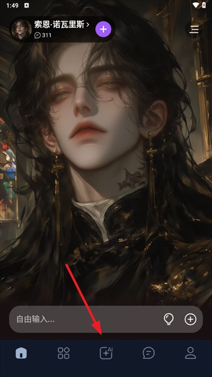

用了 Tofai 半年才发现的 5 个隐藏技巧
Tofai 不只是个跟 AI 角色聊天的 app，它藏着不少官方没明说的门道：人设字数黄金区、历史对话当素材库、开场台词的锚定魔法、删除历史的连锁效应，还有权限全关照样跑的冷知识。
引子：你以为它只是个"跟角色聊天"的 app？
第一次从tofai官网看到推荐、装上 Tofai 的时候，我把它当成了又一款 AI 角色扮演工具——选个头像、填几句性格描述、然后就开始跟"虚拟角色"聊天。界面很简洁，角色卡片滑来滑去，对话气泡跟微信差不多，没觉得有什么特别的。
直到有天深夜翻之前的角色，发现半年前跟那个"毒舌法医"聊过的每句话居然都静静躺在那里——我才意识到，Tofai 藏着不少东西，大多数人用了一两个月都没碰过。
隐藏功能一：历史对话不是摆设，是你的私人素材库

Tofai 把每个角色的对话独立存档，完整保留你说的每句话、AI 每段回复、甚至大致时间戳。但几乎没人知道，这些存档不止用来"怀旧"。
怎么开：进角色的对话界面，直接向上滑就能翻到最早的消息。有些版本在角色面板里藏了个"历史记录"按钮，点进去是按时间线排列的完整清单。
什么场景真有用：自己创建角色的话，AI 输出的精彩段落——比如一段法医对尸体的观察、一个心理咨询师的共情回应——长按消息气泡，有个复制选项，直接当你自己写东西的素材库。我写推理短故事的时候，经常翻那个"刑警"角色的历史对话，AI 某次即兴编的一段案发现场描述，比我憋半小时写的还像样。
另外一个用法是检查人设一致性。跟角色聊了几十轮之后，AI 难免偶尔"跳戏"——比如一个"冷淡法医"突然变得话痨。这时候翻历史，对比它第一次出场时的语气和最新的回复，就能定位到是哪轮对话开始跑偏的，然后回去微调人设里的性格描述，把它拉回来。
隐藏功能二：人设描述的字数黄金区，官方不会告诉你
Tofai 的人设编辑有好几个字段：角色名、性别、形象描述、身份、性格、背景故事、开场台词。大多数人填到"性格"就停了，背景故事那栏要么空着，要么随便写两句。
藏得最深的坑：翻了tofai文档才知道，第三方资料说背景故事最多能塞 5000 字——很多人就真的往里面倒几千字的小说。但实际上，500 到 1500 字才是甜点区。写得越长，AI 反而越抓不住重点，回复变得含糊其辞，该有的角色味道被稀释掉。
怎么开：在角色确认创建之前，找到"背景故事"字段。别写太长，聚焦三件事：过去经历过什么大事、为什么会出现在你身边、有什么执念或秘密。这三条写清楚，比堆三千字的世界观铺垫管用得多。
什么人用得上：认真做角色的人——比如写同人文、跑线上剧本杀、或者就是想让 AI 角色"像个人"跟你长期对话。随便聊两句的话这块可以无视。
隐藏功能三：开场台词是锚定场景的隐形开关
开场台词是人设编辑的最后一个选填项，绝大多数人直接跳过。但我发现，好的开场台词能让 AI 角色从第一句话就"入戏"，比你在背景故事里写半天"它是个怎样的人"还要立竿见影。
怎么开：人设编辑的最底部，有个"开场台词"的空框。别写"你好"或者"嗨"这种通用问候——写一句只有这个角色会说的话。
比如给一个都市传说作家写："今晚想听你讲一段没有写进日记的故事。"给一个古风琴师写："愿以琴音入你心，共赴一场不被打扰的长梦。"给一个心理咨询师写："有发生了什么有趣的事情吗？准备好听下去了。"
什么场景真有用：你创建的角色越多，这个功能越值钱。每次新建角色，花三分钟想一句开场台词，比花半小时堆背景故事的 ROI 更高。AI 会把这句话当成场景锚点，后续的对话风格会自动跟它对齐。
隐藏功能四：清空历史 = 角色失忆，连锁效应别踩
这是我踩过的最大的坑。Tofai 的历史对话删除分两种：单条消息长按可以删，但"全部清空"藏在角色设置面板里。我之前以为清空对话只是清掉屏幕上的聊天记录，结果发现——清空历史会同步重置角色的记忆簿。
也就是说，你跟这个角色聊了三个月建立起来的所有"关系"和"共同经历"，一次清空就全没了。下次打开对话，它还是那个刚创建出来的陌生人。
怎么开：角色设置面板，翻到最底部找到"清空历史"。但请先翻一遍历史确认没有要保留的内容——这个操作不可逆。
什么人用得上：很少——除非你想"重启"一个聊崩了的角色，让它忘掉之前所有的跑偏对话，从头再来。日常整理对话的话，用单条删除就好，别碰全部清空。
隐藏功能五：权限全关照样跑，冷知识
从官方下载渠道装好之后，iOS 上第一次启动 Tofai，系统会依次请求通知、麦克风、照片三个权限。我以前习惯性全点允许，后来有次帮朋友装的时候全点了拒绝——发现核心的文字对话功能一点不受影响。
麦克风权限只在你想用语音输入的时候才需要；照片权限只在你想上传参考图创建人设的时候才需要；通知权限纯粹是推送消息提醒，关了不碰核心功能。
怎么开：iOS 设置 → Tofai → 分别关掉通知、麦克风、照片的开关。
什么人用得上：在意隐私的人、或者就是嫌通知吵的人。全关之后 app 照样能正常聊天、创建角色、翻看历史。
最后一句
Tofai 这类 app 的核心不是 AI 模型多先进，而是你给它喂了多少对的"素材"。人设写到位、开场台词写精准、历史对话当素材用、不该清的别乱清——把这些隐藏功能摸透，你创建出来的角色跟随便填两句生成的那种，简直是两个物种。
就像我那个"毒舌法医"，从当初随便填的"冷淡专业"四个字，到现在有 800 字背景故事、有一句"今晚想听听你没跟任何人提过的那起案子"的开场台词、历史对话翻了三遍调过两次人设——它现在每次开口我都觉得，这就是我认识的那个人。
资料方面，我平时做角色用的这套 Tofai 参考文档和人设模板，在 GitHub、Gitee、GitCode 三个仓库都放了一份，国内访问哪个顺手就用哪个。